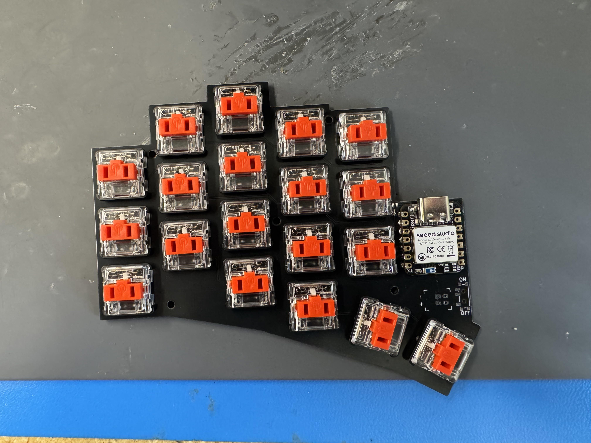
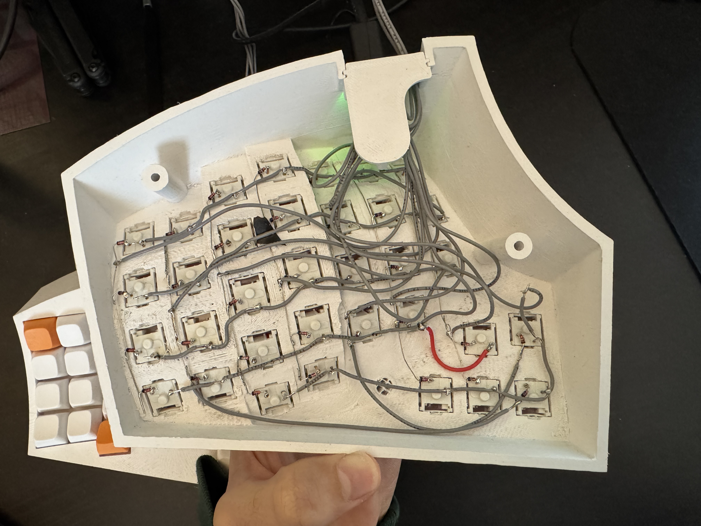
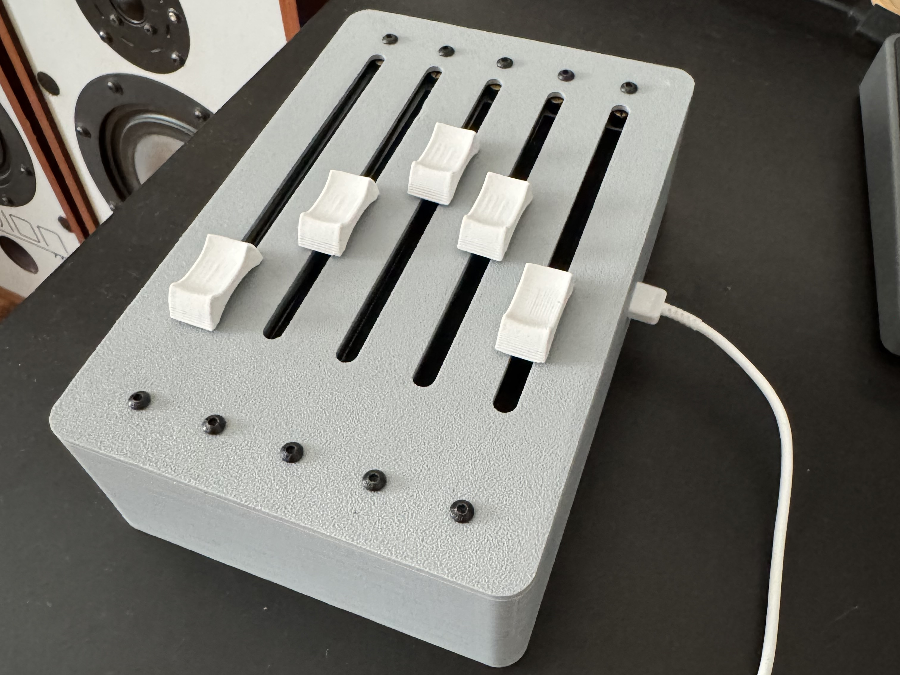

Ilya McCune-Pedit
CNC Plasma Tube Notcher
Won first place in the senior design capstone competition.
I teamed up with 5 other seniors to design a small form factor cnc plasma tube notcher for our mechanical engineering senior capstone project.
Most commercial tube notchers that we found are at least as long as the largest tube they can cut. We wanted to create something much smaller, so that it could be stored in the campus makerspace but still cut long tubes.
The final design we settled on uses a welding chuck with modified jaws that hold rollerblade wheels.
The chuck is driven by a belt from a stepper motor for rotation of the pipe, and one of the roller blade wheels has motor on it for axial movement of the pipe.
As the electrical design lead for the team I was primarily responsible for selecting and integrating the stepper motors, configuring drivers on the control PC, and figuring out the relay logic to control the plasma cutting head.
Here is the competition poster. Below are two videos of the machine, and an image of a test fit from sompe pipes we cut.

Minimal PCB Keyboard
The first keyboard is based on the idea of removing almost all keys that are not one key space away from the home row, and giving the thumbs more keys to press (instead of just space).
The base of the keyboard is a 2 layer PCB with mounting holes for choc keyswitches.
Since the keyboard is split between the left and right hand the PCB was designed so that it would work for both hands.
Each half of the keyboard is controlled by a Seeed Studio XIAO RP2040 microcontrollers.
They communicate with each other via Bluetooth and can either communicate over USB or Bluetooth with a computer, phone, or tablet.
The left hand is considered the central device so it takes the keystrokes from both halves and sends the corresponding key codes to a computer.
The ZMK firmware library was used to configure the keyboards.
This included mapping columns and rows to the microcontroller pins, what collumn and row correspond to what physical key, and what the function of each key is.
Due to the lack of keys, certain keys could be held down to activate another layer and change the function of the rest of the keys on the keyboard effectively multiplying the number of keys I had to work with.
This is similar to how the shift key is used to type special characters from the number row.



Concave Keyboard
After using the first keyboard for a few months, the lack of keys and therefore the finger gymnastics needed to type pretty much any character that was not a-z, A-Z, and 0-9 and a few frequently used keys proved to be a problem especially when trying to write code where many special characters are sometimes needed, or do CAD work where many shortcuts assume you have a full keyboard. These issues, along with a bunch of other improvements I thought I could make led me to try and design a second keyboard.
This keyboard was loosely based around a Dactyl Manuform, which is an opensource ergonomic keyboard.
Instead of removing keys that are too far away from the homerow to make it more comfortable, Dactyl keyboards have a concave shape so that fingers don't need to stretch or strain to reach further away keys.
One of the things I wanted to change from my original design was to have the keys not so exposed, which unfortunately many Dactyls share, so I used the parametric design of the dactyl to get a layout that felt comfortable to me, and then redesigned the frame from scratch in Solidworks using that as the layout.
Since I was increasing the key count to a more normal amount, this keyboard wasn't going to be very small and would just sit on my desk I decided to do away with the bluetooth functionality and have everything wired.
Additionally, due to the concave shape of the keyboard it was a lot simpler and cost effective to wire everything by hand.
Each half of the keybaord has an Adafruit kb2040 microcontroller, the left half sends its hardware button presses over uart to the right half which processes all the button presses and sends the keycodes over USB to anyconnected computer.


Motorized MIDI Faders
Created a bank of MIDI sliders that communicate via USB-C to audio production software on a computer.
The sliders are Behringer X32 replacement faders, they have a linear potentiometer and a motor connected to the wiper.
The potentiometers are connected to a Teensy 4.0 microcontroller.
Additionally, the motors are controlled by 3 drv8833 motor drivers also connected to the Teensy.
The faders can be moved by hand, and they emit MIDI control commands that can then be mapped to values in a DAW.
If a value in the DAW is changed the Teensy recieves the control commands and using PD control loop with some additional deadzones uses the motors to move the sliders.


Software Pathtracer
Created a software graphics engine in C++, that simulates rays of light bouncing off spheres and planes to create images.
I first followed the book Ray Tracing in One Weekend which renders to an image file, but then wanted to create something that was more interactive.
All models are defined mathematically and materials determine how a light ray interacts with the surface once an intersection has been determined.
Created 4 base materials: diffuse, glass/translucent, metallic, and a mix of a diffuse with a glossy coat ontop.
The app is made with OpenGL and GLFW, and uses Dear ImGui for control panels and display things.
OpenGL is only used very basically to have a window use Dear ImGui in.
The actual scene is rendered to an image and then displayed in Dear ImGui window.
During developement I experimented with various forms of data structures and rendering aproaches.
This included single material class with many parameters v.s. multiple types of material classes derived from a base class, similar ideas with single model v.s. different classes for plane, sphere or triangle, and using a recursive function to do the tracing of a ray on each bounce v.s. looping through the max number of bounces.
Additionaly, the consequences of virtual functions and repeatedly looping through large arrays of pointers became very obvious.
I have ideas to try and implement spectral rendering, so moving from RGB colors to tracing actual wave lengths, however I went on a tangent trying to learn Vulkan so that the path tracing could be offloaded to the GPU.
Here is the code, though it was left in a broken state and the Vulkan learning has been restarted seperately.